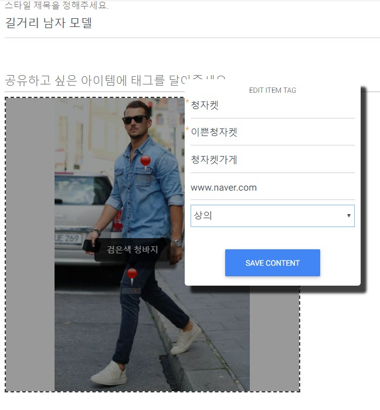
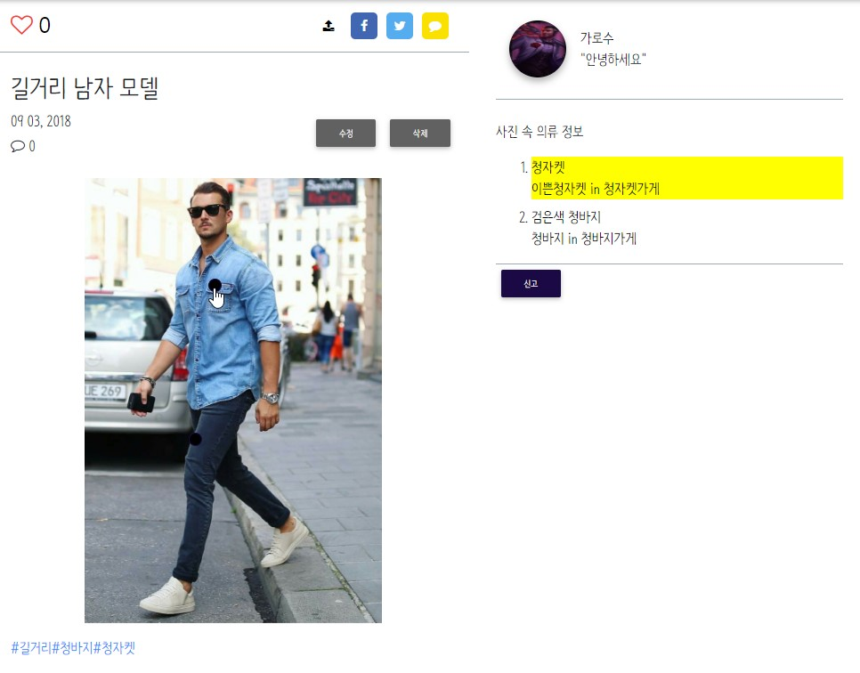
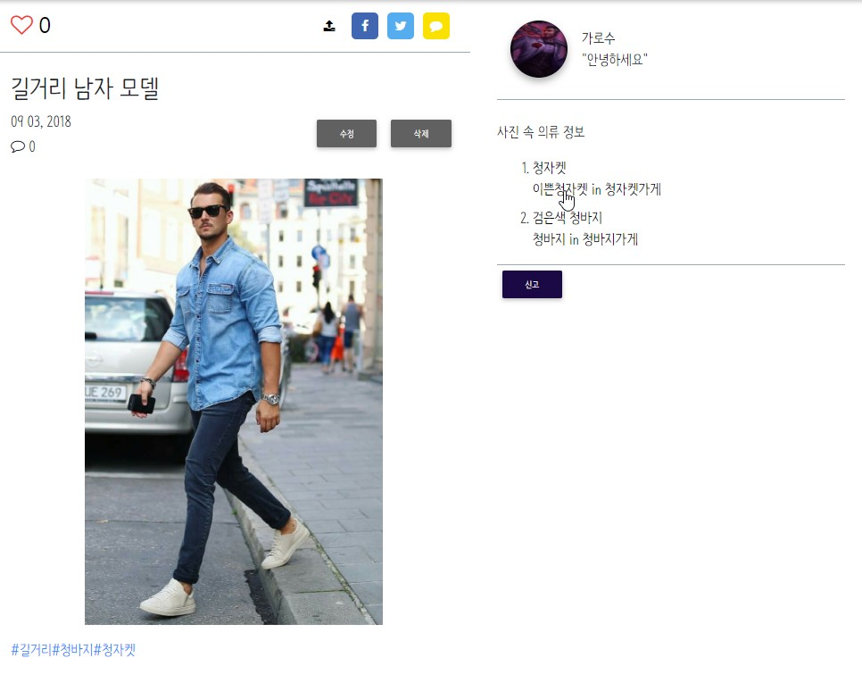
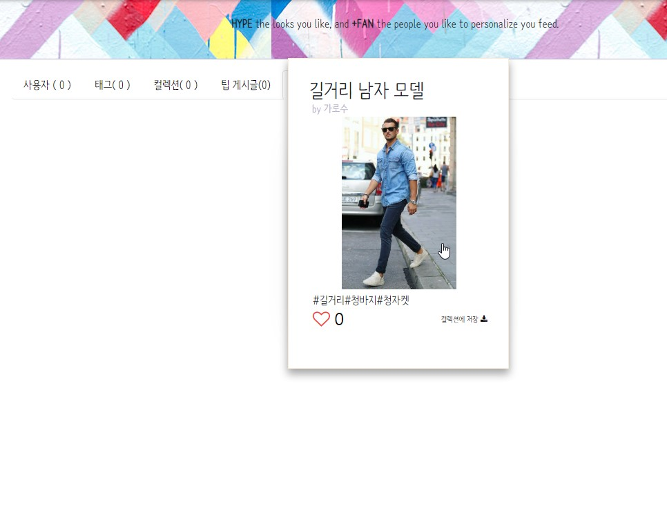
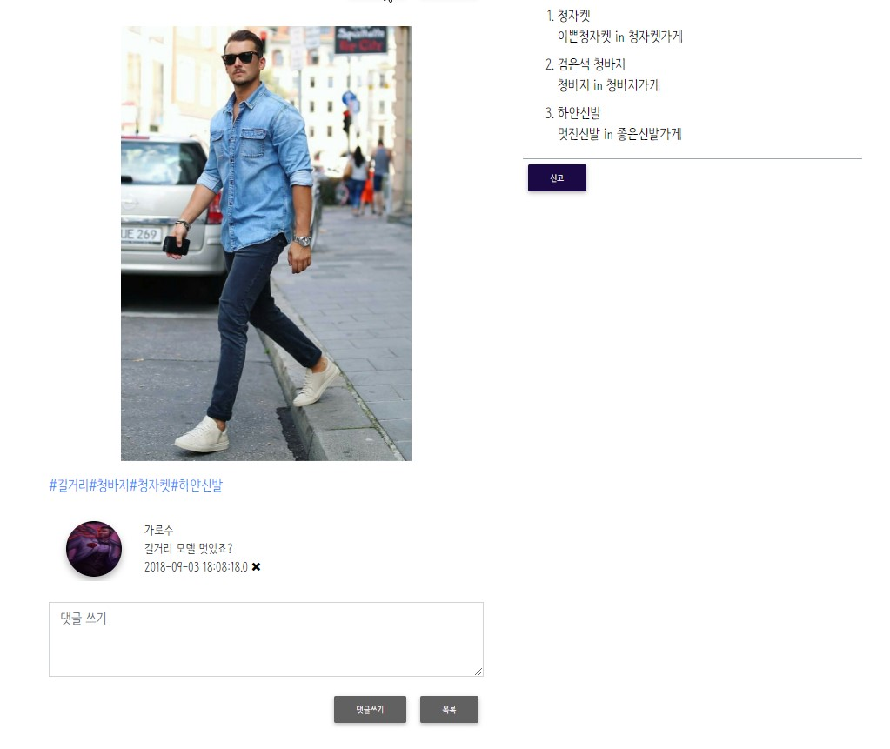
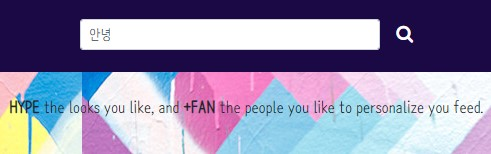
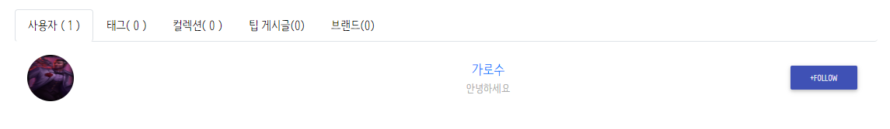

ITSO
프로젝트 이름 : ITSO
프로젝트 기간 : 2018-08-01 ~ 2018-09-04
사용 기술 : HTML5, CSS3, JavaScript, jQuery, Bootstrap, Java, Spring, Mybatis, Oracle
버전 관리 : GitKraken, GitHub / WAS : Apache Tomcat
개발 목표 : 패션에 관심있는 사람들을 위한 패션 공유 사이트 제작


태그입력
글 작성시 알려주고 싶은 의류 정보에 태그를 표시하면 글 조회시 태그에 입력된 정보를 볼 수 있다.


의류정보 공유
마음에 드는 의류명을 클릭하면 그 이름과 일치하는 태그들을 포함한 게시물을 보여준다.
해시태그
해시태그를 클릭하면 해시태그가 일치하는 글들을 보여준다.

댓글
전과달리 Ajax통신으로 댓글을 달아도 페이지 재로딩이 없이 댓글이 표시된다.


검색
검색어를 입력하면 사용자의 상태 정보 및 태그, 컬렉션, 웹 게시글, 브랜드 명 등이 검색된다.
후기
스프링 교육을 빨리 끝내고 시작한 프로젝트여서 그런지 스프링의 기술들을 잘 이해하지 못하고 활용하지 못한거 같다. 팀원들이 서로 각자 맡은 부분을 구현하다 보니 다른 팀원들이 사용한 기술들을 사용하지 못한게 아쉬웠다. 항상 느끼는 거였지만 문법 공부만 한다고 실력이 느는 것이 아니라 무언가 프로그램을 만들어 봐야 실력이 느는것 같다. 이 프로젝트 이후로 학원은 종강하게 되었다. 6개월동안 많은 것을 배우기에는 부족한 시간이였지만 자신감이 없던 내가 자신감을 가지고 공부를 할 수 있는 계기를 주었던 것 같다.